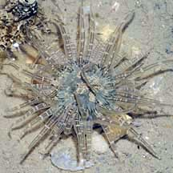
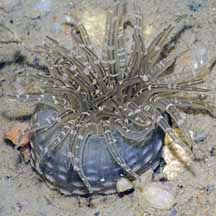
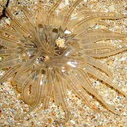

|
|
| sea anemones text index | photo index |
| Phylum Cnidaria > Class Anthozoa > Subclass Zoantharia/Hexacorallia > Order Actiniaria |
| Striped
bead anemone Paracondylactis singaporensis Family Actiniidae updated Dec 2024 Where seen? This small anemone is commonly seen especially on our Northern shores. Even relatively "beat up" shores with few other lifeforms will have these anemones. It is often found in small clusters of a few individuals. It settles wedged in crevices on rocks, on hard surfaces such as jetty pilings, boulders, rocks, and on small stones on the shores. When exposed at low tide, it tucks its tentacles into its body and looks like a blob. Features: Diameter with tentacles 2-3cm. Many semi-transparent tentacles that taper to a pointed tip. On the upper side of the tentacles, there is a pattern of white bars across a pair of dark parallel lines that run the length of each tentacle. The oral disk may be plain or have a pattern of stripes radiating out from the mouth. Sometimes mistaken for the Banded bead anemone, which is smaller than the Striped bead anemone. The Banded bead anemone is found in tight clusters of many individuals, while the Striped bead anemone may be seen alone or in loose clusters of a few individuals. Status and threats: There is inadequate information as at 2024 to make an informed assesment of its conservation status in Singapore. |
 Pasir Ris Park, Dec 08 |
 Pasir Ris Park, Dec 08 |
*Species are difficult to positively identify without close examination.
On this website, they are grouped by external features for convenience of display.
| Striped bead anemones on Singapore shores |
On wildsingapore
flickr
|
| Other sightings on Singapore shores |
 Kusu Island, Aug 07 |
References
|